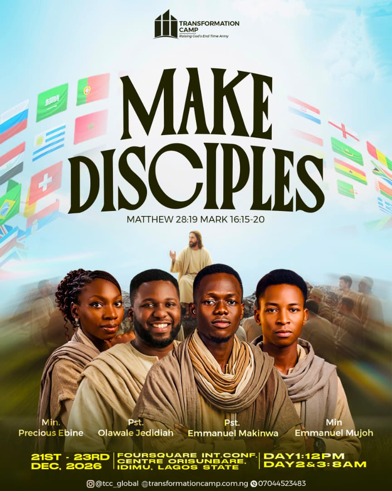

Pastors & Ministers
Registration
We recognise the men and women who faithfully serve God's people. Join us for spiritual refreshing, fellowship and renewed strength for the work of ministry.
At Transformation Camp, we warmly welcome pastors, ministers and ministry leaders to be part of this gathering. Come experience God's presence, be enriched by His Word, connect with fellow ministers and share in a time of fellowship, renewal and spiritual strengthening.
Plan your
visit.
We look forward to welcoming you to Transformation Camp at Foursquare International Conference Centre, Orisunbare, Idimu, Lagos State. Please share your arrival and accommodation needs so the team can review them and follow up with event information.
Accommodation assistance requests are collected for planning and do not confirm a booking or complimentary arrangement.
View the camp schedule
Register for
the gathering.
Share a few details to help our team plan for your attendance. Your submission will be received for review; it is not a confirmed registration or accommodation booking.
We’re here
to help.
If you need assistance with this form or your attendance, contact the Transformation Camp team through the official Instagram account.
Contact the camp team